คู่มือต้อนรับบริการพระและสาธุชน
หน้า 1
คู่มือต้อนรับบริการพระและสาธุชน
วันคุ้มครองโลก ๒๒ เมษายน พ.ศ. ๒๕๖๙
มหาสังฆทาน ๔๐,๐๐๐ กว่าวัดทั่วประเทศ
ณ วัดพระธรรมกาย จ.ปทุมธานี
ฉบับปรับปรุง 20 เมษายน 2569
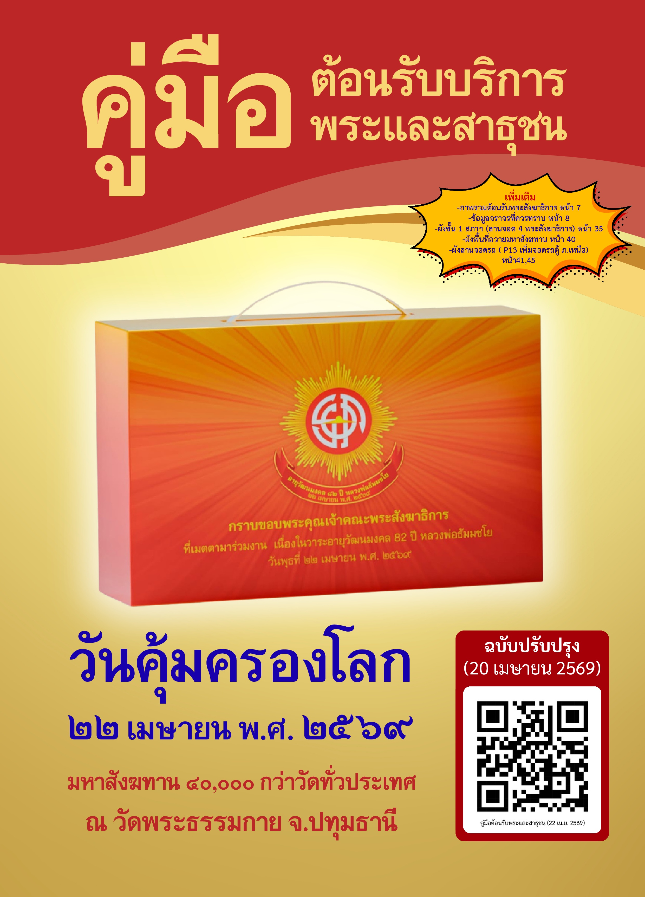
ฉบับปรับปรุง 20 เมษายน 2569

| หัวข้อ | หน้า |
|---|---|
| การเข้าพื้นที่นั่งสาธุชน ภาคเหนือ (เชียงราย เชียงใหม่ นครสวรรค์ แพร่ น่าน พะเยา แม่ฮ่องสอน ลำปาง ลำพูน พิจิตร เพชรบูรณ์ อุตรดิตถ์ อุทัยธานี) | 20-21 |
| การเข้าพื้นที่นั่งสาธุชน ภาคเหนือ (กำแพงเพชร ตาก พิษณุโลก สุโขทัย) | 22-23 |
| ผังลานจอด P11, P11/1, P11/2, P13, P31, P32 (ภาคเหนือ) | 44-45 |
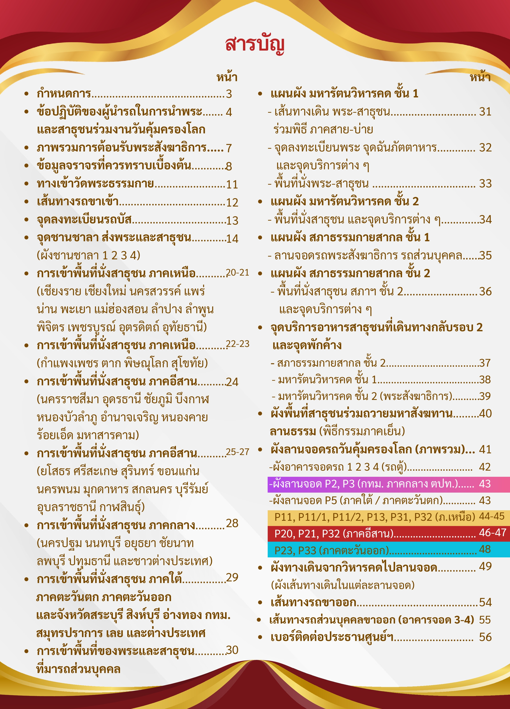
| เวลา | กิจกรรม |
|---|---|
| 06.00 – 09.00 น. | เปิดบริการภัตตาหารเช้า |
| 07.00 – 15.30 น. | ลงทะเบียนพระสังฆาธิการที่มีใบฎีกา |
| เวลา | กิจกรรม |
|---|---|
| 09.30 น. | สาธุชนและพระปฏิบัติธรรม |
| 10.45 น. | พิธีมอบปัจจัยช่วยเหลือครู 4 จังหวัดชายแดนภาคใต้ |
| 10.45 น. | พิธีกล่าวคำถวายภัตตาหารเป็นสังฆทาน |
| 11.00 – 12.00 น. | เปิดบริการภัตตาหารเพล |
| เวลา | กิจกรรม |
|---|---|
| 13.00 น. | สัมมนาสงฆ์ เพื่อความมั่นคงและความเจริญรุ่งเรืองแห่งพระพุทธศาสนา (ห้องแก้วสารพัดนึก 2 สภาธรรมกายสากล) |
| เวลา | กิจกรรม |
|---|---|
| 16.00 น. | สาธุชนเข้าพื้นที่ลานธรรม |
| 16.15 น. | คณะสงฆ์เข้าพื้นที่ลานธรรม |
| 17.15 น. | ถ่ายภาพประวัติศาสตร์ "กองพลร่มมหาเศรษฐี" |
| 17.30 น. | พิธีถวายมหาสังฆทาน 40,000 กว่าวัดทั่วประเทศ |
| 19.00 น. | เสร็จพิธี |
ลำดับพิธีถวายมหาสังฆทาน (17.30 น.):

1. ก่อนออกเดินทาง
2. ติดบัตรหน้ารถ
3. แจกบัตรประจำตัวสำหรับสมาชิก
4. ห้องน้ำ
5. ศึกษาเส้นทางเข้าวัด
| ภาค/จังหวัด | เส้นทาง | ประตูเข้า |
|---|---|---|
| ภาคเหนือ | ถนนสีขาว | ประตู 8 |
6. ลงทะเบียนรถขาเข้า
| จุดลงทะเบียน | สถานที่ | วัน/เวลาเปิด |
|---|---|---|
| จุดที่ 1 | ลานจอดรถ P1 ข้างมหาวิหารพระมงคลเทพมุนี | วันที่ 21 เม.ย. เวลา 09.00 น. – วันที่ 22 เม.ย. เวลา 15.00 น. |
| จุดที่ 2 | ลานจอดรถ P11 ข้างอาคาร 60 ปี | วันที่ 22 เม.ย. เวลา 00.00 – 15.00 น. |
หมายเหตุสำคัญ:
สรุป: รถที่จะสามารถเบิกค่ารถได้ ต้องลงทะเบียนในเวลา จอดในลานจอดที่กำหนด และได้รับสติกเกอร์ที่เจ้าหน้าที่ตรวจรถในลานจอดติดให้ ไม่ต้องลงทะเบียนขาออก

7. ส่งพระและสาธุชนลงในชานชาลาที่กำหนด
กำหนดการช่วงสาย-บ่าย:
การร่วมพิธีและข้อปฏิบัติในพื้นที่:
8. อาหาร
9. นำสาธุชนเข้าพื้นที่ลานธรรม
10. การเดินทางกลับ

| ภาค | ลานจอดรถบัส | สีของไฟลานจอด | ลานจอดรถตู้ | สีของไฟลานจอด |
|---|---|---|---|---|
| ภาคเหนือ | P13 | ไฟสีเหลือง | P11, P11/1, P11/2 | ไฟสีเหลือง |
3. เส้นทางเดินไปลานจอด — สังเกตป้ายและไฟสีตามตารางข้างต้น
4. กรณีพลัดหลง
5. ผู้ที่เดินไม่ไหว มีรถรับ-ส่ง:
6. แบ่งช่วงเวลาให้รถออกเป็น 2 ช่วง:
ขอความร่วมมือ:

เปิดเวลา 15.00 น. เป็นต้นไป
| วิหารคด | จังหวัด/ภาค |
|---|---|
| วิหารคด ชั้น 2 คอร์ 12-13-14-15 | ภาคเหนือ |
| ห้องพัก | ประเภทพระ |
|---|---|
| ห้องพัก SPD 1-2 | พระสังฆาธิการทั่วไป |
| ห้องพัก SPD 5 | เจ้าคณะอำเภอ / รองเจ้าคณะอำเภอ / เจ้าคณะตำบล / รองเจ้าคณะตำบล |
| ห้องพัก SPD 6 | พระสังฆาธิการจังหวัดเลย |
| ห้องพัก SPD 7 / 9 / 10 / 13 / 14 / 16 / 17 | จังหวัดเลย / หนองบัวลำภู / หนองคาย |
| ห้องพัก SPD 18 | ห้องพักสารถีเฉพาะผู้ช่วยเจ้าคณะชั้นปกครอง |
ติดต่อ: พระมหานครินทร์ 097-009-8702 / พระมหาอริยวิชช์ สีหชโย 098-889-4641
ติดต่อพระมหากองการคณะสงห์ที่ดูแลจังหวัด หรือติดต่อ:
| วิหารคด | ภาค/พื้นที่ |
|---|---|
| วิหารคด ชั้น 1 คอร์ 14 – 15 | ภาคเหนือ |
| บริเวณ | ภาค |
|---|---|
| วิหารคด ชั้น 1 คอร์ 14 – 15 – 16 | ภาคเหนือ |
เฉพาะ พระสังฆาธิการทั่วไปจังหวัดเลย (และ หนองคาย หนองบัวลำภู สภาธรรมกายสากล) ทางเข้า 5 ฝั่งซ้าย บริเวณเสา G22-G31
| บัตร | สี | จุดจอด |
|---|---|---|
| บัตรติดหน้ารถพระราชาคณะ | เหลือง | ลานจอดหน้าคอร์ 30-31-32 |
| บัตรติดหน้ารถพระสังฆาธิการทั่วไป | ชมพู | จุดที่ 1 ลานจอดหน้าคอร์ 1-2-3 (วงนอก) เช้า–สาย–บ่าย |
| จุดที่ 2 ใต้สภาธรรมกายสากล ลานจอด 7-8-9 เช้า–สาย–บ่าย | ||
| บัตรติดหน้ารถประธานสงฆ์ | ขาว | ด้านในหน้าคอร์ 32 ทิศตะวันออก |
| คณะกรรมการมหาเถรสมาคม | ขาว | ด้านในหน้าคอร์ 32 ทิศตะวันออก |
ติดต่อ:
หมายเหตุ: เมื่อลงทะเบียนแล้ว กรุณารักษาบัตร เพื่อใช้แลกกัปปิยภัณฑ์ในลานธรรม เท่านั้น
| สี | สำหรับ | พื้นที่ |
|---|---|---|
| เหลือง | พระราชาคณะ | พื้นที่นั่งไทยธรรมด้านหน้ามหาธรรมกายเจดีย์ |
| เขียว | พระสังฆาธิการทั่วไปต่างประเทศ | พื้นที่นั่งไทยธรรมฝั่งนอก |
| น้ำเงิน | พระสังฆาธิการทั่วไป | พื้นที่นั่งไทยธรรมลานธรรม โซน A, B |
| แดง | พระสังฆาธิการทั่วไป | พื้นที่นั่งไทยธรรมลานธรรม โซน C, D |
แผนผังโซนพื้นที่ลานธรรม
คอร์ 14 คอร์ 20
┌────────────────────────────┐
│ B (น้ำเงิน) C (แดง) │
│ │
│ [ มหาธรรมกายเจดีย์ ] │
│ (ส้ม - พระราชาคณะ) │
│ │
│ A (น้ำเงิน) D (แดง) │
└────────────────────────────┘
คอร์ 3 คอร์ 30
| รอบ | เวลา |
|---|---|
| รอบที่ 1 | 07.00 – 08.00 น. |
| รอบที่ 2 | 08.15 – 09.00 น. |
| รอบที่ 3 | 09.15 – 10.00 น. |
| รอบที่ 4 | 10.15 – 11.00 น. |
ช่วงบ่าย: ไม่มีรถรับ-ส่ง
| รอบ | เวลา |
|---|---|
| รอบที่ 1 | 19.00 – 19.20 น. |
| รอบที่ 2 | 19.30 – 20.00 น. |
จุดขึ้นรถ: บริเวณพื้นที่รับรองพระราชาคณะ วิหารคด ชั้น 1 คอร์ 32
หมายเหตุ: เวลารถขาเข้าและขาออกอาจมีการเปลี่ยนแปลง สามารถติดต่อได้ที่
ติดต่อ: พระมหาคมศักดิ์ สามตุยิชโย 096-946-3639
| ชื่อ | เบอร์โทรศัพท์ |
|---|---|
| พระมหาบุญเอื้อน ปุณฺญสาโร | 081-415-9642 |
| พระมหาสมจิต สมิทชโย | 084-696-1055 |
| พระมหาสาตรี ชาครชโย | 093-514-9654 |

รถส่วนตัวของพระภิกษุ → จอดที่ สภาธรรมกายสากล
| สถานที่ | ชั้น | ลานจอด |
|---|---|---|
| สภาธรรมกายสากล | ชั้น 1 สภาฯ | ลานจอด 7, 8 และ 9 |
รถส่วนตัวของสาธุชน → จอดได้ 2 ที่
| สถานที่ | ลานจอด |
|---|---|
| สภาธรรมกายสากล ชั้น 1 | ลานจอด 1, 2, 3, 4, 5 และ 6 |
| อาคารจอดรถ (ทุกอาคาร) | จอดได้ทุกอาคาร ตั้งแต่ชั้น 4 ขึ้นไป |
วันที่ 22 เมษายน 2569 เวลา 00.01 – 22.00 น.
เพื่อใช้เป็นจุดส่งพระ และสาธุชน เข้าพื้นที่สภาธรรมกายสากล และวิหารคด
ถาม-ตอบ รวดเร็ว ทันที Line OA: "ข้อมูล 22 เม.ย. 69"
เว็บไซต์ค้นหารถ (ออนไลน์/ออฟไลน์):

สอนการใช้โปรแกรมที่ เสา E10 สภาธรรมกายสากล
เคล็ดลับ: ถ้ามาหลายคันในอำเภอ สามารถพิมพ์อำเภอตามด้วยคันที่ เช่น "บ้านไร่100"
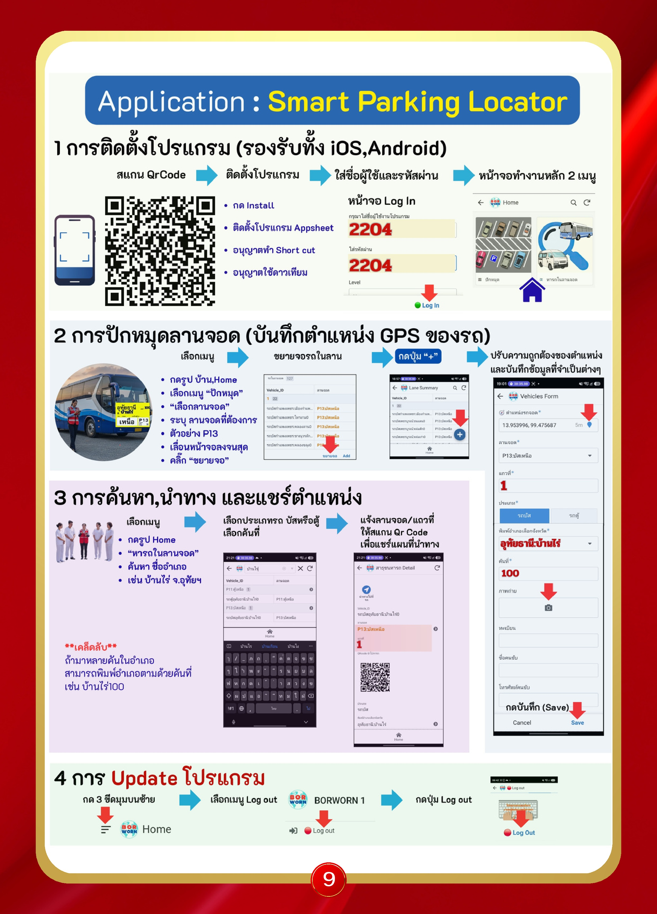
รถบัส-รถตู้ → เข้าให้ถูกประตู → ลงทะเบียนที่จุดลงทะเบียนรถบัส-รถตู้
| ชานชาลา | เข้าประตู | ส่งพระและสาธุชน |
|---|---|---|
| ชานชาลา 3 | ประตู 8 | พระและสาธุชน ภาคเหนือ และภาคอีสาน (ยโสธร ศรีสะเกษ สุรินทร์ ขอนแก่น นครพนม มุกดาหาร สกลนคร บุรีรัมย์ อุบลราชธานี กาฬสินธุ์) |
| ภาค | ลานจอดรถบัส | ลานจอดรถตู้ |
|---|---|---|
| ภาคเหนือ | P13 | P11, P11/1, P11/2 (จอดพัก P31-P32) |
รถส่วนบุคคลพระ จอดชั้น 1 สภาธรรมกายสากล ลานจอด 7-8-9 รถส่วนบุคคลสาธุชน จอดชั้น 1 สภาธรรมกายสากล และอาคารจอดรถทุกอาคาร ชั้น 4-9
ช่วงที่ 1 เวลา 19.30 น. เป็นต้นไป:
ช่วงที่ 2 เวลา 21.30 น. เป็นต้นไป:
⚠️ รถบัส-รถตู้ จอดในลานจอดที่กำหนดเท่านั้น "ห้ามย้ายรถออกมารับสาธุชนนอกลานจอด"
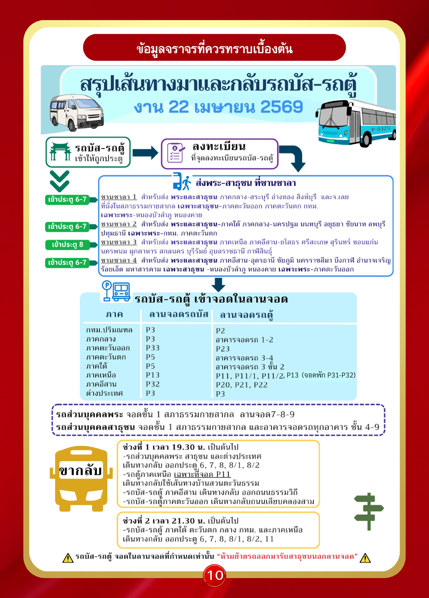
ถนนสีขาว – ประตู 8:
ถนนคลองหลวง – ประตู 7:
ถนนธรรมวิถี – คลองแอล 3-4 - ประตู 6:

ผังเส้นทางรถขาเข้าในวันที่ 22 เม.ย. 2569 ตั้งแต่เวลา 00.01 น. เป็นต้นไป

| จุดลงทะเบียนรถบัส | ลาน | ตำแหน่ง | เวลาเปิด |
|---|---|---|---|
| จุดลงทะเบียน 1 | ลาน P1 | ด้านใต้วัด ฝั่งถนนคลองหลวง | วันที่ 21 เม.ย. 69 เวลา 09.00 น. ถึง วันที่ 22 เม.ย. 69 เวลา 15.00 น. |
| จุดลงทะเบียน 2 | ลาน P11 | ด้านเหนือวัด ฝั่งถนนสีขาว ถนนพหลโยธิน | วันที่ 22 เม.ย. 69 เวลา 00.00 – 15.00 น. |

| ชานชาลา | สำหรับส่ง (พระและสาธุชน) | หมายเหตุ |
|---|---|---|
| ชานชาลา 3 | พระและสาธุชน ภาคเหนือ และภาคอีสาน (ยโสธร ศรีสะเกษ สุรินทร์ ขอนแก่น นครพนม มุกดาหาร สกลนคร บุรีรัมย์ อุบลราชธานี กาฬสินธุ์) | เข้าประตู 8 |

ผังชานชาลา 1 :
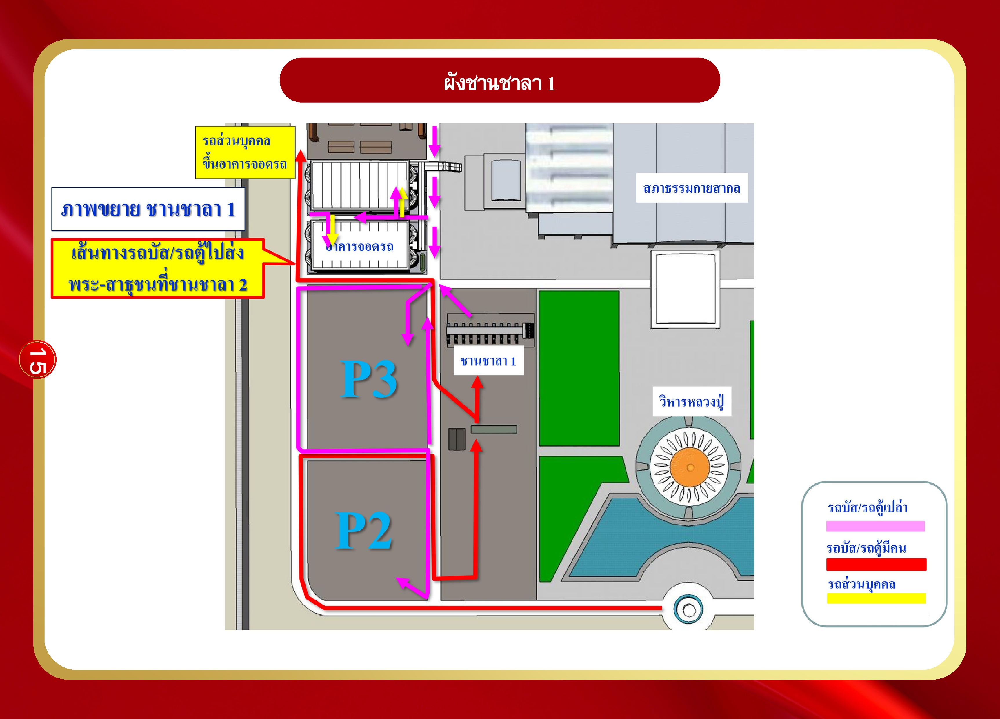
ผังชานชาลา 2 แสดง:
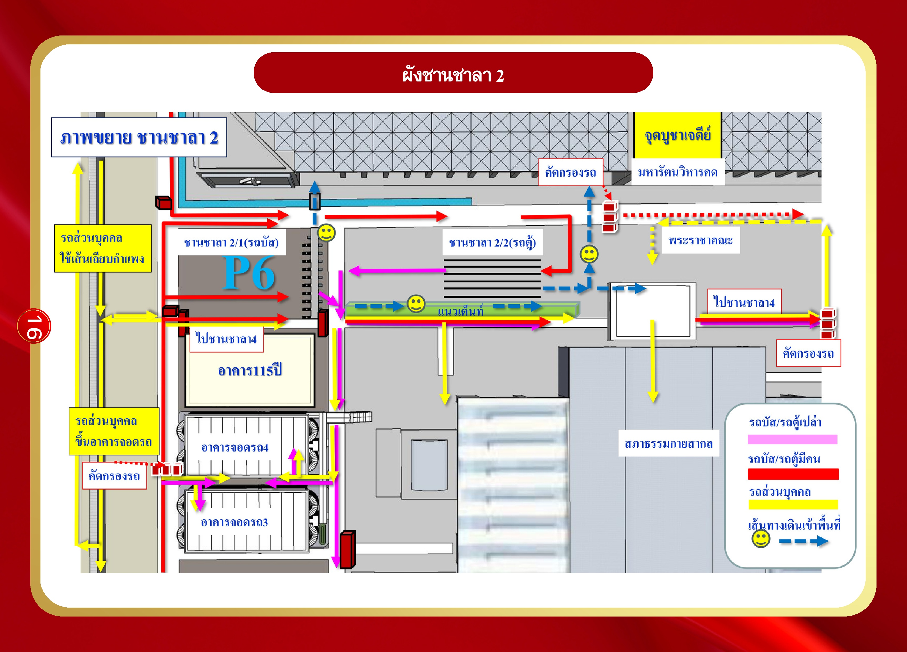
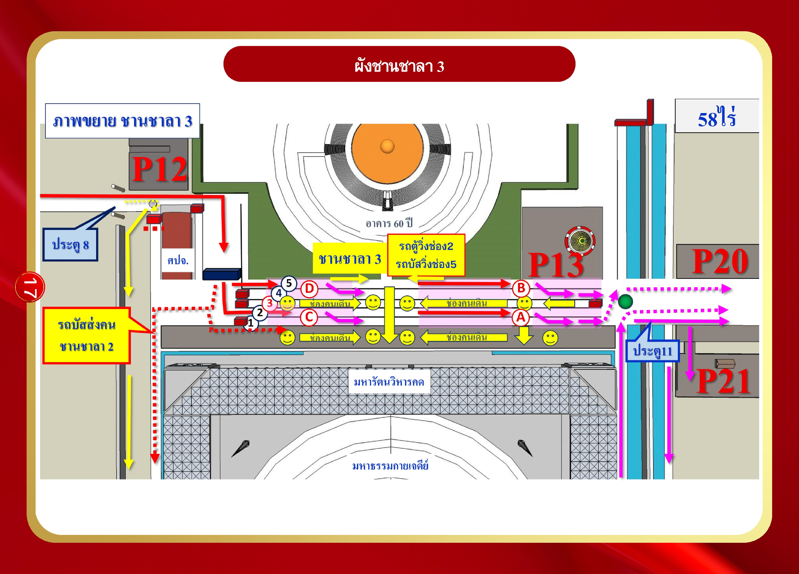
ผังชานชาลา 4 อยู่ใกล้กับแนว วิหารคดหมายเลข 21, 24, 25, 29
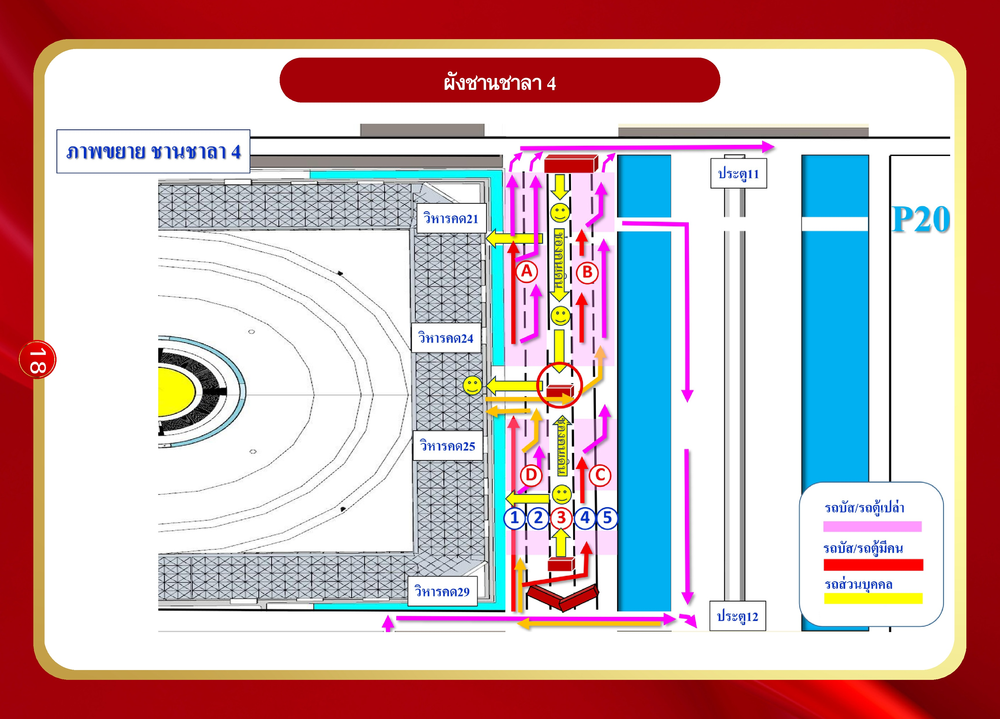
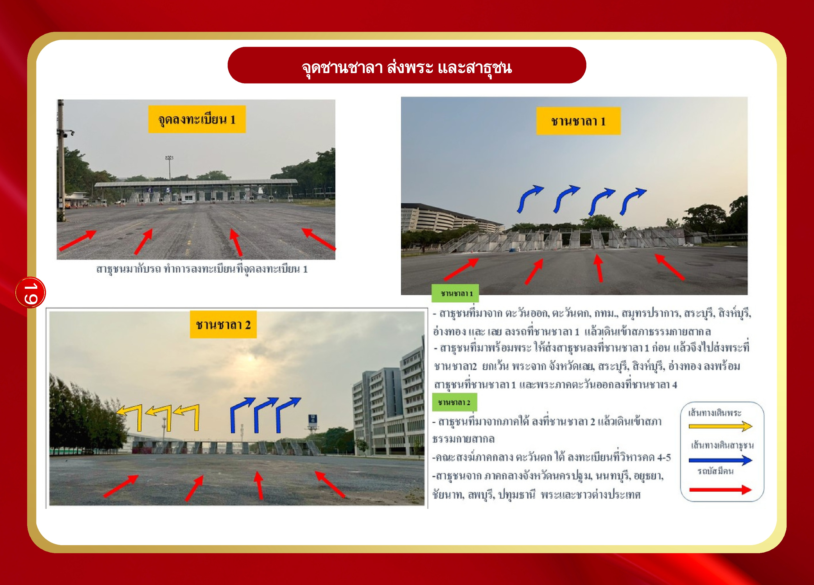
จังหวัด: เชียงราย, เชียงใหม่, นครสวรรค์, แพร่, น่าน, พะเยา, แม่ฮ่องสอน, ลำปาง, ลำพูน, พิจิตร, เพชรบูรณ์, อุตรดิตถ์, อุทัยธานี
นั่งที่: มหารัตนวิหารคด ชั้น 1 วิหารคด 9-11 (อยู่ทิศตะวันตก)
ขั้นตอน:
(หากเดินทางมาถึงก่อนเวลา 04:00 น. สามารถพักค้างที่จุดพักค้างพระก่อน)

จังหวัด: เชียงราย, เชียงใหม่, นครสวรรค์, แพร่, น่าน, พะเยา, แม่ฮ่องสอน, ลำปาง, ลำพูน, พิจิตร, เพชรบูรณ์, อุตรดิตถ์, อุทัยธานี
นั่งที่: มหารัตนวิหารคด ชั้น 1 วิหารคด 9-11 (อยู่ทิศตะวันตก)
สาธุชน: ลงรถที่ชานชาลา 3 → เดินเข้าแนวกลาง พ้นชายคาให้เลี้ยวขวา ไปที่วิหารคด 9-11 คณะสงฆ์: ลงรถที่ชานชาลา 3 → เดินเข้าจุดลงทะเบียนพระที่แนวกลาง ฝั่งวิหารคด 16

จังหวัด: กำแพงเพชร, ตาก, พิษณุโลก, สุโขทัย
นั่งที่: มหารัตนวิหารคด ชั้น 2 วิหารคด 16
ขั้นตอน:
ผู้สูงอายุ: สามารถใช้ลิฟท์โดยสารที่วิหารคด 13 และเดินมาที่พื้นที่นั่งของแต่ละจังหวัด

จังหวัด: กำแพงเพชร, ตาก, พิษณุโลก, สุโขทัย
นั่งที่: มหารัตนวิหารคด ชั้น 2 วิหารคด 16
คณะสงฆ์: ลงทะเบียนแนวกลางฝั่งวิหารคด 16 เสร็จแล้ว เข้าพื้นที่รับรองด้านขวามือ บริเวณวิหารคด 14-16 ตามป้ายชื่อจังหวัด สาธุชน: เดินขึ้นบันไดชั้น 2 วิหารคด 16

จังหวัด: นครราชสีมา, อุดรธานี, ชัยภูมิ, บึงกาฬ, หนองบัวลำภู, อำนาจเจริญ, หนองคาย, ร้อยเอ็ด, มหาสารคาม
นั่งที่: มหารัตนวิหารคด ชั้น 1 วิหารคด 22-24
ขั้นตอน:

จังหวัด: ยโสธร, ศรีสะเกษ, สุรินทร์, ขอนแก่น, นครพนม, มุกดาหาร, สกลนคร, บุรีรัมย์, อุบลราชธานี, กาฬสินธุ์
นั่งที่: มหารัตนวิหารคด ชั้น 2 วิหารคด 17-20
ขั้นตอน:

จังหวัด: ยโสธร, ศรีสะเกษ, สุรินทร์, ขอนแก่น, นครพนม, มุกดาหาร, สกลนคร, บุรีรัมย์, อุบลราชธานี, กาฬสินธุ์
นั่งที่: มหารัตนวิหารคดชั้น 2 วิหารคด 17-20
สาธุชนขึ้นชั้น 2 ทางบันได แยกตามวิหารคด:
| วิหารคด | จังหวัดที่ขึ้นบันไดนี้ |
|---|---|
| วิหารคด 17 | ยโสธร, ศรีสะเกษ, สุรินทร์, ขอนแก่น |
| วิหารคด 18 | บุรีรัมย์, กาฬสินธุ์ |
| วิหารคด 19 | สกลนคร |
| วิหารคด 20 | อุบลราชธานี, มุกดาหาร |
ผู้สูงอายุ: สามารถใช้ลิฟท์โดยสารที่วิหารคด 20 และเดินมาที่พื้นที่นั่งของแต่ละจังหวัด

จังหวัด: ยโสธร, ศรีสะเกษ, สุรินทร์, ขอนแก่น, นครพนม, มุกดาหาร, สกลนคร, บุรีรัมย์, อุบลราชธานี, กาฬสินธุ์ | นั่ง: มหารัตนวิหารคดชั้น 2 วิหารคด 17-20
คณะสงฆ์: ลงทะเบียนแนวกลางฝั่งวิหารคด 17 เสร็จแล้ว → เข้าพื้นที่รับรองด้านซ้ายมือ วิหารคด 17-20 สาธุชน: เดินขึ้นบันไดชั้น 2

จังหวัด: นครปฐม, นนทบุรี, อยุธยา, ชัยนาท, ลพบุรี, ปทุมธานี และชาวต่างประเทศ
นั่งที่: มหารัตนวิหารคด ชั้น 1 ทิศใต้ (วิหารคด 1-4)
ขั้นตอน:

จังหวัด: ภาคใต้, ภาคตะวันตก, ภาคตะวันออก และจังหวัดสระบุรี, สิงห์บุรี, อ่างทอง, กทม., สมุทรปราการ, เลย และต่างประเทศ
นั่งที่: สภาธรรมกายสากล
ขั้นตอน:

การเข้าพื้นที่ของพระและสาธุชนที่มารถส่วนบุคคล
งดใช้ถนนรอบวิหารคด — ใช้ถนนเลียบกำแพงวัดแทน
การเข้ามหารัตนวิหารคดหมายเลขต่างๆ สามารถเดิน หรือโดยสารรถพ่วงที่จะมีบริการรับ-ส่งรอบวิหารคด
พระราชาคณะ ใช้ลานจอดหน้าวิหารคด 32
รถพระสังฆาธิการ ที่มาหลังเวลา 14:00 น. สามารถจอดที่ลานหน้าวิหารคด 2 ได้
เส้นทางที่ไม่ควรผ่าน: บริเวณประตู 11 และถนนรอบวิหารคด

โซนสีตามทิศ:
โซนกลางอาคาร (บริเวณเซียะซีซอ / ที่จุดพิธีกลาง):
| โซน | ช่วงเช้า (ภาคสาย) | ช่วงบ่าย (ภาคเพล) |
|---|---|---|
| 4B | เข้าพิธีเช้า | เพล |
| 4C | เข้าพิธีเช้า | เพล |
| 4D | เข้าพิธีเช้า | เพล |
| 5B | เข้าพิธีเช้า | เพล |
| 5C | เข้าพิธีเช้า | เพล |
| 5D | เข้าพิธีเช้า | เพล |
พื้นที่พิเศษ:
จุดบริการ: จุดบริการภัตตาหาร, จุดติดต่อสอบถาม, จุดพยาบาล, จุดน้ำดื่ม, ห้องน้ำ, จุดเจ้าหน้าที่ต้อนรับบริการ

| จุดลงทะเบียน | ตำแหน่ง | สำหรับ | เวลาเปิด |
|---|---|---|---|
| จุดลงทะเบียน 3 | วิหารคด 16 (ทิศเหนือ) | พระสังฆาธิการ ภาคเหนือ | 07:00–15:30 น. |
หมายเหตุ: จุดลงทะเบียน 1 อยู่บริเวณชานชาลา (ลงทะเบียนรถก่อนเข้าวัด)

วิหารคดจะมีอาคารทั้งหมด 32 อาคารยาวต่อกัน เรียกแต่ละอาคารว่า "คอร์" มีตัวเลขกำกับ 1–32
| คอร์ | รายละเอียด | ไลน์บุ๊ฟเฟ่พระเช้า | จังหวัด |
|---|---|---|---|
| 14–16 | ภาคเหนือ | คอร์ 16 | เชียงใหม่, เชียงราย, ลำปาง, ลำพูน, แม่ฮ่องสอน, แพร่, นครสวรรค์, น่าน, พะเยา, ตาก, กำแพงเพชร, พิษณุโลก, อุตรดิตถ์, เพชรบูรณ์, สุโขทัย, อุทัยธานี, พิจิตร |
| คอร์ | จังหวัด |
|---|---|
| 1–2 | ปทุมธานี, อยุธยา, ลพบุรี, ชัยนาท, นนทบุรี, นครปฐม |
| 9–11 | เชียงใหม่, เชียงราย, นครสวรรค์, น่าน, แพร่, พะเยา, แม่ฮ่องสอน, ลำปาง, ลำพูน, พิจิตร, อุตรดิตถ์, เพชรบูรณ์, อุทัยธานี |
| 22–24 | มหาสารคาม, ร้อยเอ็ด, อำนาจเจริญ, หนองคาย, หนองบัวลำภู, บึงกาฬ, ชัยภูมิ, อุดรธานี, นครราชสีมา |
หมายเหตุ: จุดแจกอาหารสาธุชน จะอยู่ในคอร์ที่สาธุชนนั่ง
คนหาย · ของหาย · คนพลัดหลง · สอบถามได้ทุกเรื่อง — มี 16 จุด รอบวิหารคด
| ลำดับ | คอร์ | เสา |
|---|---|---|
| 1 | คอร์ 1 | A2 |
| 2 | คอร์ 2 | F6 |
| 3 | คอร์ 4 | A11 |
| 4 | คอร์ 7 | F17 |
| 5 | คอร์ 10 | F27 |
| 6 | คอร์ 13 | A34 |
| 7 | คอร์ 15 | F39 |
| 8 | คอร์ 17 | A45 |
| 9 | คอร์ 18 | F50 |
| 10 | คอร์ 22 | A57 |
| 11 | คอร์ 23 | F62 |
| 12 | คอร์ 24 | A66 |
| 13 | คอร์ 26 | F71 |
| 14 | คอร์ 29 | A78 |
| 15 | คอร์ 31 | F83 |
| 16 | คอร์ 32 | A87 |
รอบวิหารคดชั้น 1 — มี 10 จุด
| ลำดับ | คอร์ | แนวเสา |
|---|---|---|
| 1 | คอร์ 1 | D2 |
| 2 | คอร์ 2 | A6 |
| 3 | คอร์ 7 | A18 |
| 4 | คอร์ 10 | A27 |
| 5 | คอร์ 15 | A39 |
| 6 | คอร์ 16 | A44 |
| 7 | คอร์ 18 | A50 |
| 8 | คอร์ 23 | A62 |
| 9 | คอร์ 26 | A71 |
| 10 | คอร์ 31 | A83 |
อยู่หน้าห้องน้ำวิหารคดทุกคอร์ ยกเว้น คอร์ 5, คอร์ 13, คอร์ 20 และคอร์ 28
มีทุกคอร์ (คอร์ 1–32)

ชั้น 2 มหารัตนวิหารคด — แบ่งพื้นที่ดังนี้:
| ทิศ / ตำแหน่ง | ใช้งาน |
|---|---|
| ด้านเหนือ (วิหารคด 10-13) | จุด 10 = พื้นที่สาธุชน ภาคเหนือ กลุ่ม 2 (กำแพงเพชร ตาก พิษณุโลก สุโขทัย) |
| ด้านเหนือ (วิหารคด 14-16) | ที่พักค้างพระสังฆาธิการ (ภาคเหนือ) + ที่พักสาธุชน |
จุดบริการ: จุดน้ำดื่ม, ห้องน้ำ, จุดพยาบาล, จุดติดต่อสอบถาม, จุดบริการภัตตาหาร
หมายเหตุ: ผู้สูงอายุสามารถใช้ลิฟท์โดยสารที่วิหารคด 20

ลานจอดรถ (จากใต้ขึ้นเหนือ):
| ลานจอด | รายละเอียด | อยู่ทางทิศ |
|---|---|---|
| ลานจอด 1 | รถส่วนบุคคลสาธุชน (จุดซักฝากกระเป๋า, บริการงานบุญ, ศูนย์เด็ก) | ด้านล่างซ้าย (ทิศใต้ตะวันตก) |
| ลานจอด 2 | รถส่วนบุคคลสาธุชน | ด้านล่างกลาง |
| ลานจอด 3 | รถส่วนบุคคลสาธุชน (สำนักงาน ส.บริการกลาง + ส.สารธนูปการ หัวอาคารหลัก) | ด้านล่างขวา (ทิศใต้ตะวันออก) |
| ลานจอด 4 | รถส่วนบุคคลสาธุชน | ด้านกลางซ้าย |
| ลานจอด 5 | รถส่วนบุคคลสาธุชน | ด้านกลาง |
| ลานจอด 6 | รถส่วนบุคคลสาธุชน | ด้านกลางขวา |
| ลานจอด 7 | รถพระสังฆาธิการ | ด้านบนซ้าย (ทิศเหนือตะวันตก) |
| ลานจอด 8 | รถพระสังฆาธิการ | ด้านบนกลาง |
| ลานจอด 9 | รถพระสังฆาธิการ (ยุวต้อนรับ, อาคารแก้ว, บุญสถาน) | ด้านบนขวา (ทิศเหนือตะวันออก) |
จุดข้างอาคาร (ด้านในระเบียง):
| หมายเลข | บริการ |
|---|---|
| 2 | จุดพักค้าง อสม.บริการกลาง |
| 3 | จุดพักค้าง อสม.บริการกลาง |
| 4 | พักค้าง อสม. / โฆษณาการ |
| 5 | ทางเข้าจุดพยาบาล |
| 6 | พักค้าง อสม. |
| 7 | ที่เก็บของ |
| 8 | สำนักงาน ส.สารธนูปการ หัวอาคาร |
เสาอ้างอิง:
จุดบริการ: ห้องน้ำ, จุดพยาบาล (ทางเข้า 5), จุดน้ำดื่ม, จุดบริการ

หมายเหตุ: ห้องน้ำอยู่ที่สภาธรรมกายสากล ชั้น 1
แบ่งเป็น 6 พื้นที่ ตามช่วงเสา
| พื้นที่ | ช่วงเสา | หมายเหตุ | จังหวัด |
|---|---|---|---|
| 1 | G12–G19 | — | สุพรรณบุรี, กาญจนบุรี, เพชรบุรี, สมุทรสงคราม, สมุทรสาคร |
| 2 | H4–H18 | หน้ารัตนบัลลังก์ ฝั่งขวามือพระประธาน | ชลบุรี, เลย, อ่างทอง, สิงห์บุรี, สระบุรี, ประจวบคีรีขันธ์, ราชบุรี, ระยอง |
| 3 | K5–K18 | หน้ารัตนบัลลังก์ ฝั่งซ้ายมือพระประธาน | ปราจีนบุรี, ฉะเชิงเทรา, ตราด, นครนายก, จันทบุรี, สระแก้ว |
| 4 | K26–K32 | หน้าบ้านยาย | สงขลา, พัทลุง, ตรัง, นราธิวาส, สตูล, ปัตตานี, ยะลา |
| 5 | J26–J32 | หน้าบ้านยาย | นครศรีธรรมราช, สุราษฎร์ธานี, ภูเก็ต, ระนอง, กระบี่, ชุมพร, พังงา |
| 6 | ห้องแก้วสารพัดนึก 1 / Q13–Q19 หรือ L13–L19 | — | กรุงเทพ, สมุทรปราการ |
| ลำดับ | ตำแหน่งเสา | บริเวณ |
|---|---|---|
| 1 | B2 | ใกล้หน้าระเบียง 2 |
| 2 | M30 | ใกล้หน้าระเบียง 6 |
| 3 | Q2 | ใกล้หน้าระเบียง 8 |
มี 10 จุด ณ ตำแหน่งเสาดังนี้
G4 · G11 · G16 · G27 · K4 · K11 · K20 · K27 · P13 · ระเบียง 4 เสา 25
มี 5 จุด ณ ตำแหน่งเสาดังนี้
G7 · G17 · G27 · K21 · P5
มี 10 จุด ณ ตำแหน่งเสาดังนี้
A6 · G8 · G15 · K8 · K15 · K23 · K28 · N2 · Q13 · ระเบียง 4 เสา 25

| จุดบริการ | ตำแหน่ง | ภาคที่รับบริการ |
|---|---|---|
| จุดบริการ 3 | เสา B20 | ภาคกลาง + ภาคตะวันตก |
| จุดบริการ 6 | เสา M32 | กทม. + ภาคใต้ |
| ตำแหน่ง | จังหวัดที่พักค้าง |
|---|---|
| หน้าห้องแก้วฯ 2 | จันทบุรี, ระยอง, ตรัง, สุพรรณบุรี, นราธิวาส, พัทลุง, สตูล, สงขลา, ภูเก็ต, ระนอง, นครศรีธรรมราช |
| ทางเข้า 1 | เลย, ปราจีนบุรี |

มีทั้งหมด 6 จุด:
| จุดบริการ | ตำแหน่ง | ภาคที่รับบริการ |
|---|---|---|
| จุดบริการ 1 | คอร์ 9 (วิหารคด 9) | ภาคเหนือ 1, 3 |
| จุดบริการ 2 | คอร์ 10 (วิหารคด 10) | ภาคเหนือ 2 |
สาธุชน: พักค้างในพื้นที่นั่งสาธุชน

พื้นที่พักค้างพระสังฆาธิการ:
พื้นที่พักค้างสาธุชน: พื้นที่นั่งสาธุชนรอบชั้น 2
พื้นที่ไซต์จัดอบรม: บริเวณกลางของชั้น 2
หมายเหตุ: จุดบริการอาหารสาธุชนที่เดินทางกลับรอบ 2 มีบริการที่ มหารัตนวิหารคด ชั้น 1 (ดูผังในหน้า 37)

(พิธีกรรมภาคเย็น)
แบ่งพื้นที่เป็น 4 โซน (A, B, C, D) แต่ละโซนมี 7 แถว:
| โซน | ภาค | ตำแหน่ง |
|---|---|---|
| B (เหนือ) | ภาคเหนือ | ด้านซ้ายบน (B1-B7) |
หมายเหตุสำคัญ:

| ภาค | ลานจอดรถบัส | ลานจอดรถตู้ |
|---|---|---|
| ภาคเหนือ | P13 (หน้า 45) | P11, P11/1, P11/2 (หน้า 44) P13 (หน้า 45) จอดพัก P31-P32 (หน้า 45) |

หมายเหตุสำคัญ: รถยนต์ส่วนตัวสาธุชน จอดได้ทุกอาคาร ตั้งแต่ชั้น 4 ขึ้นไป
การจัดสรรชั้น:
| ชั้น | จังหวัดที่จอด |
|---|---|
| ชั้น 3 | ลพบุรี, พระนครศรีอยุธยา |
| ชั้น 2 | นนทบุรี, ปทุมธานี |
| ชั้น 1 | ชัยนาท, นครปฐม |
การจัดสรรชั้น:
| ชั้น | จังหวัดที่จอด |
|---|---|
| ชั้น 3 | สิงห์บุรี |
| ชั้น 2 | สระบุรี |
| ชั้น 1 | อ่างทอง |
การจัดสรรชั้น:
| ชั้น | จังหวัด / ภาคที่จัดสรร |
|---|---|
| ชั้น 3 | ราชบุรี / กาญจนบุรี |
| ชั้น 2 | ภาคใต้ |
| ชั้น 1 | ราชบุรี |
การจัดสรรชั้น:
| ชั้น | จังหวัดที่จัดสรร |
|---|---|
| ชั้น 3 | สุพรรณบุรี |
| ชั้น 2 | สุพรรณบุรี / เพชรบุรี / ประจวบคีรีขันธ์ |
| ชั้น 1 | สมุทรสาคร / เพชรบุรี / สมุทรสงคราม |

สิ่งอำนวยความสะดวก: น้ำดื่ม, อาหาร, ห้องน้ำ, จุดข้อมูล, เจ้าหน้าที่จราจร
การจัดสรรแถว:
| แถว | จังหวัดที่จอด |
|---|---|
| แถว 1 | กรุงเทพมหานคร / สมุทรปราการ |
| แถว 2 | กรุงเทพมหานคร / สมุทรปราการ |
| แถว 3 | กรุงเทพมหานคร / สมุทรปราการ |
| แถว 4 | กรุงเทพมหานคร / สมุทรปราการ |
| แถว 5 | กรุงเทพมหานคร / สมุทรปราการ |
| แถว 6 | กรุงเทพมหานคร / สมุทรปราการ |
สีไฟลานจอด: ชมพู
สิ่งอำนวยความสะดวก: น้ำ, อาหาร, ห้องน้ำ, จุดข้อมูล, เจ้าหน้าที่จราจร
การจัดสรรแถว:
| แถว | ประเภทรถ | พื้นที่ที่จัดสรร |
|---|---|---|
| แถว 1 | รถตู้ | ต่างประเทศ |
| แถว 2 | รถตู้ | ต่างประเทศ |
| แถว 3 | รถตู้ | ต่างประเทศ |
| แถว 4 | — | - |
| แถว 5 | รถบัส | ต่างประเทศ |
| แถว 6 | รถบัส | ภาคกลาง |
| แถว 7 | รถบัส | กรุงเทพมหานคร |
สีไฟลานจอด: ชมพู ม่วง ส้ม
สิ่งอำนวยความสะดวก: น้ำ, อาหาร, ห้องน้ำ, จุดข้อมูล, เจ้าหน้าที่จราจร
การจัดสรรแถว:
| แถว | จังหวัด / ภาคที่จัดสรร |
|---|---|
| แถว 1 | ภาคตะวันตก |
| แถว 2 | สุราษฎร์ธานี / นครศรีธรรมราช |
| แถว 3 | ชุมพร / ภูเก็ต / สงขลา / ระนอง / กระบี่ / พังงา |
| แถว 4 | พัทลุง / ตรัง / สตูล / สงขลา |
| แถว 5 | ปัตตานี / ยะลา / นราธิวาส |
สีไฟลานจอด: ขาว เขียว

สีไฟลานจอด: เหลือง
การจัดสรรแถว:
| แถว | จังหวัดที่จัดสรร |
|---|---|
| แถว 4 | ตาก / กำแพงเพชร |
| แถว 4.1 | กำแพงเพชร |
| แถว 5 | กำแพงเพชร / พิษณุโลก |
| แถว 5.1 | กำแพงเพชร |
การจัดสรรแถว:
| แถว | จังหวัดที่จัดสรร |
|---|---|
| แถว 1/1 | เชียงราย |
| แถว 2/1 | เชียงราย |
| แถว 3/1 | เชียงราย |
| แถว 1/2 | เชียงใหม่ |
| แถว 2/2 | เชียงใหม่ |
| แถว 3/2 | เชียงราย-เชียงใหม่ |
การจัดสรรแถว:
| แถว/ตำแหน่ง | จังหวัดที่จอด |
|---|---|
| แถว 4/1 | เชียงใหม่ |
| แถว 4/2 | ลำพูน |
| แถว 5/1 | ลำปาง-เชียงใหม่ / ลำปาง |
| แถว 5/2 | ลำปาง |
| แถว 5/3 | ลำพูน |
| แถว 6/1 | ลำปาง |
| แถว 6/2 | ลำปาง |
| แถว 6/3 | ลำพูน |

สิ่งอำนวยความสะดวก: น้ำ, อาหาร, ห้องน้ำ, จุดข้อมูล, เจ้าหน้าที่จราจร, รถบัสรับ-ส่ง
การจัดสรรแถว:
| แถว | จังหวัดที่จอด |
|---|---|
| แถว 1 | อุทัยธานี / กำแพงเพชร / เพชรบูรณ์ |
สีไฟลานจอด: เหลือง
สิ่งอำนวยความสะดวก: น้ำ-อาหาร 2 จุด, ห้องน้ำ
การจัดสรรแถว:
| กลุ่ม | แถว | จังหวัดที่จัดสรร |
|---|---|---|
| กลุ่มบน (ตาก-นครสวรรค์) | แถว 6/1 | ตาก |
| แถว 7/1 | ตาก | |
| แถว 6/2 | ตาก | |
| แถว 7/2 | ตาก | |
| แถว 6/3 | ตาก | |
| แถว 7/3 | นครสวรรค์-ตาก | |
| แถว 6/4 | นครสวรรค์ | |
| แถว 7/4 | นครสวรรค์ / ลำพูน | |
| กลุ่มกลาง (เชียงราย-เชียงใหม่) | แถว 1/1 | เชียงราย |
| แถว 2/1 | เชียงราย | |
| แถว 1/2 | เชียงราย | |
| แถว 2/2 | เชียงราย | |
| แถว 1/3 | เชียงใหม่ | |
| แถว 2/3 | เชียงราย | |
| แถว 1/4 | เชียงใหม่ | |
| แถว 2/4 | เชียงใหม่ | |
| กลุ่มล่าง (แพร่-ลำปาง) | แถว 3/1 | ลำพูน |
| แถว 4/1 | ลำพูน | |
| แถว 5/1 | ลำพูน | |
| แถว 3/2 | ลำพูน / ลำปาง | |
| แถว 4/2 | ลำพูน-แพร่ / ลำพูน | |
| แถว 5/2 | ลำพูน | |
| แถว 3/3 | ลำปาง | |
| แถว 4/3 | ลำพูน-ลำปาง / ลำพูน | |
| แถว 5/3 | ลำพูน | |
| แถว 3/4 | ลำปาง | |
| แถว 3/4 | ลำปาง | |
| แถว 3/4 | ลำปาง | |
| แถว 3/5 | เชียงใหม่ | |
| แถว 4/5 | เชียงใหม่-ลำปาง / ลำปาง | |
| แถว 5/5 | ลำปาง |
การจัดสรรแถว:
| แถว | จังหวัดที่จัดสรร |
|---|---|
| แถว 1/3 | กำแพงเพชร |
| แถว 2/3 | กำแพงเพชร |
| แถว 3/3 | กำแพงเพชร |
| แถว 4/2 | พิษณุโลก-กำแพงเพชร |
| แถว 4/3 | กำแพงเพชร |

สีไฟลานจอด: แดง
สิ่งอำนวยความสะดวก: จุดบริการน้ำ-อาหาร 3 จุด, ห้องน้ำ, จุดข้อมูล, เจ้าหน้าที่จราจร
การจัดสรรแถว:
| กลุ่ม | แถว | จังหวัดที่จัดสรร |
|---|---|---|
| กลุ่ม 1 | แถว 1/1 | ขอนแก่น / ศรีสะเกษ |
| แถว 2/1 | ขอนแก่น | |
| แถว 3/1 | นครพนม / นครพนม | |
| แถว 4/1 | — | |
| กลุ่ม 2 | แถว 1/2 | ขอนแก่น / ศรีสะเกษ |
| แถว 2/2 | ขอนแก่น | |
| แถว 3/2 | นครพนม-ยโสธร / นครพนม | |
| แถว 4/2 | มุกดาหาร | |
| กลุ่ม 3 | แถว 1/3 | ขอนแก่น / ศรีสะเกษ |
| แถว 2/3 | ขอนแก่น-สุรินทร์ | |
| แถว 3/3 | ยโสธร-สกลนคร / นครพนม | |
| แถว 4/3 | มุกดาหาร-กาฬสินธุ์ | |
| กลุ่ม 4 | แถว 1/4 | ขอนแก่น / ศรีสะเกษ |
| แถว 2/4 | สุรินทร์ | |
| แถว 3/4 | สกลนคร / นครพนม | |
| แถว 4/4 | กาฬสินธุ์ | |
| กลุ่ม 5 | แถว 1/5 | ขอนแก่น / ศรีสะเกษ |
| แถว 2/5 | สุรินทร์ | |
| แถว 3/5 | สกลนคร / นครพนม | |
| แถว 4/5 | กาฬสินธุ์-สกลนคร | |
| กลุ่ม 6 | แถว 1/6 | ขอนแก่น / ศรีสะเกษ-ขอนแก่น |
| แถว 2/6 | สุรินทร์ | |
| แถว 3/6 | นครพนม-สุรินทร์ / สกลนคร | |
| แถว 4/6 | สกลนคร |
จังหวัดหลักที่จัดสรร: ขอนแก่น, ศรีสะเกษ, นครพนม, สุรินทร์, สกลนคร, ยโสธร, มุกดาหาร, กาฬสินธุ์
สีไฟลานจอด: แดง
สิ่งอำนวยความสะดวก: น้ำ-อาหาร 2 จุด, ห้องน้ำ, จุดข้อมูล, เจ้าหน้าที่จราจร, รถตู้รับ-ส่ง
การจัดสรรแถว:
| แถว/ตำแหน่ง | จังหวัดที่จอด |
|---|---|
| แถว 1/1 | บุรีรัมย์ |
| แถว 1/2 | อุบลราชธานี |
| แถว 1/3 | อุบลราชธานี |
| แถว 2/1 | บุรีรัมย์ |
| แถว 2/2 | อุบลราชธานี |
| แถว 2/3 | อุบลราชธานี |
| แถว 3/1 | บุรีรัมย์ |
| แถว 3/2 | อุบลราชธานี |
| แถว 4 | บุรีรัมย์ |
สีไฟลานจอด: แดง

สีไฟลานจอด: แดง
การจัดสรรแถว:
| แถว | จังหวัดที่จัดสรร |
|---|---|
| แถว 1/1 | นครราชสีมา |
| แถว 2/1 | อำนาจเจริญ / อำนาจเจริญ |
| แถว 3/1 | มหาสารคาม |
| แถว 1/2 | นครราชสีมา |
| แถว 2/2 | อำนาจเจริญ-หนองบัวลำภู / อำนาจเจริญ |
| แถว 3/2 | ร้อยเอ็ด-เลย |
| แถว 1/3 | นครราชสีมา |
| แถว 2/3 | หนองบัวลำภู / อำนาจเจริญ-อุดรธานี |
| แถว 3/3 | เลย |
| แถว 1/4 | นครราชสีมา |
| แถว 2/4 | หนองบัวลำภู / อุดรธานี-ชัยภูมิ |
| แถว 3/4 | เลย-หนองคาย |
| แถว 1/5 | นครราชสีมา-ชัยภูมิ |
| แถว 2/5 | หนองบัวลำภู-บึงกาฬ / ชัยภูมิ |
| แถว 3/5 | หนองคาย |
| แถว 1/6 | ชัยภูมิ |
| แถว 2/6 | บึงกาฬ / ชัยภูมิ |
| แถว 3/6 | หนองคาย-บึงกาฬ |
จังหวัดหลักที่จัดสรร: นครราชสีมา, อำนาจเจริญ, หนองบัวลำภู, เลย, หนองคาย, ชัยภูมิ, อุดรธานี, บึงกาฬ, มหาสารคาม, ร้อยเอ็ด
สีไฟลานจอด: แดง
สิ่งอำนวยความสะดวก: น้ำ-อาหาร 3 จุด, ห้องน้ำ, เจ้าหน้าที่จราจร, รถบัสรับ-ส่ง
การจัดสรรแถว:
| แถว | จังหวัดที่จัดสรร |
|---|---|
| แถว 1/2 | นครราชสีมา |
| แถว 2/2 | นครราชสีมา |
| แถว 3/1 | อุดรธานี |
| แถว 4/1 | อุดรธานี |
| แถว 3/2 | ชัยภูมิ / นครราชสีมา |
| แถว 4/2 | ชัยภูมิ |
| แถว 1/3 | บึงกาฬ |
| แถว 2/3 | บึงกาฬ |
| แถว 3/3 | หนองบัวลำภู / อำนาจเจริญ / หนองคาย |
| แถว 4/3 | ร้อยเอ็ด |
| แถว 3/4 | กาฬสินธุ์ |
| แถว 4/4 | สุรินทร์ |
| แถว 5/3 | มหาสารคาม |
| แถว 6/3 | เลย / มุกดาหาร / สกลนคร |
| แถว 5/4 | บุรีรัมย์ / อุบลราชธานี |
| แถว 6/4 | ยโสธร / ขอนแก่น / ศรีสะเกษ |
สีไฟลานจอด: แดง

สิ่งอำนวยความสะดวก: น้ำ-อาหาร 2 จุด (ด้านบนและด้านล่าง), ห้องน้ำ, จุดข้อมูล, เจ้าหน้าที่จราจร, รถ 2 แถวรับ-ส่ง
การจัดสรรแถว:
| แถว | จังหวัดที่จัดสรร |
|---|---|
| แถว 1 | สระแก้ว |
| แถว 2 | สระแก้ว |
| แถว 3 | สระแก้ว |
| แถว 4 | สระแก้ว |
| แถว 5 | สระแก้ว |
| แถว 6 | สระแก้ว |
| แถว 7 | สระแก้ว |
| แถว 8 | ปราจีนบุรี |
| แถว 9 | ปราจีนบุรี |
| แถว 10 | ปราจีนบุรี |
| แถว 11 | ปราจีนบุรี |
| แถว 12 | ปราจีนบุรี |
| แถว 13 | ชลบุรี |
| แถว 14 | ชลบุรี |
| แถว 15 | ชลบุรี |
| แถว 16 | ชลบุรี |
| แถว 17 | ชลบุรี |
สีไฟลานจอด: น้ำเงิน
สิ่งอำนวยความสะดวก: น้ำ-อาหาร, จุดข้อมูล, ห้องน้ำ, เจ้าหน้าที่จราจร
การจัดสรรแถว:
| แถว | จังหวัดที่จัดสรร |
|---|---|
| แถว 18/1 | จันทบุรี |
| แถว 18/2 | จันทบุรี |
| แถว 18/3 | จันทบุรี |
| แถว 18/4 | จันทบุรี |
| แถว 19/1 | ฉะเชิงเทรา / จันทบุรี |
| แถว 19/2 | จันทบุรี / ฉะเชิงเทรา |
| แถว 19/3 | ฉะเชิงเทรา-ระยอง / จันทบุรี-ฉะเชิงเทรา |
| แถว 19/4 | ระยอง / ฉะเชิงเทรา |
| แถว 20/1 | ระยอง |
| แถว 20/2 | ระยอง-ตราด |
| แถว 20/3 | ตราด-นครนายก |
| แถว 20/4 | นครนายก |
สีไฟลานจอด: น้ำเงิน
สิ่งอำนวยความสะดวก: เจ้าหน้าที่จราจร, ลูกศรชี้ทิศทางเข้า-ออก
การจัดสรรแถว:
| แถว | จังหวัดที่จัดสรร |
|---|---|
| แถว 1 | สระแก้ว / จันทบุรี / ชลบุรี |
| แถว 2 | ชลบุรี / ระยอง / Minibus |
สีไฟลานจอด: น้ำเงิน

หลังเสร็จพิธี: ให้รวมตัวเช็คสมาชิกให้ครบ ทำภารกิจในวิหารคด ก่อนเดินทางไปลานจอด
1. พระสังฆาธิการ: ให้กลับไปยังพื้นที่นั่งที่รับรองในวิหารคด ตามป้ายชื่อจังหวัด ทำภารกิจส่วนตัว รอผู้นำรถที่นัดหมายไปนิมนต์กลับ
2. สาธุชน — แนะนำให้รวมตัวกันในพื้นที่ดังต่อไปนี้:
| เงื่อนไข | รายละเอียด |
|---|---|
| 2.1 ภาคเหนือ + ภาคอีสาน ที่นั่งชั้น 1 | ให้กลับเข้าไปรวมตัวกันในวิหารคด (ที่เดิมก่อนออกมาลานธรรม) ตามป้ายชื่อจังหวัด |
| 2.2 ภาคเหนือ + ภาคอีสาน ที่นั่งวิหารคดชั้น 2 | ให้รวมตัวหน้าวิหารคดชั้น 1 ทิศเหนือ ตรงกับป้ายจังหวัดของพระสังฆาธิการ |
หมายเหตุ: แต่ละภาคยังมีการแก้ไขอีก ให้เช็กให้ชัดเจนตามความเหมาะสม
ภาคเหนือ → P11, P11/1, P11/2 (ไฟสีเหลือง): ออกจากวิหารคด 9-11 เดินไปทางทิศเหนือ ผ่านชานชาลา 3 ข้ามถนนสีขาว ไปยังลาน P11 สังเกตไฟสีเหลือง
ภาคเหนือ → P13 (รถบัส ไฟสีเหลือง): ออกจากวิหารคด 14-16 เดินไปทางทิศเหนือ ไปยังลาน P13 สังเกตไฟสีเหลือง
ภาคอีสาน → P20, P21, P22 (รถตู้ ไฟสีแดง): ออกจากวิหารคด 17-24 เดินไปทางทิศตะวันออก ผ่านชานชาลา 4 ไปยังลาน P20-P22 สังเกตไฟสีแดง
ภาคอีสาน → P32 (รถบัส ไฟสีแดง): ออกจากวิหารคด 22-24 เดินไปทางทิศตะวันออกเฉียงเหนือ ไปยังลาน P32 สังเกตไฟสีแดง
ภาคกลาง, ภาคตะวันตก → อาคารจอดรถ 1-4, P3 (ไฟสีม่วง/เขียว): ออกจากวิหารคด 1-5 เดินไปทางทิศใต้ ผ่านชานชาลา 2 ไปยังอาคารจอดรถและ P3 สังเกตไฟสีม่วง/เขียว ขาว
กทม./สมุทรปราการ → P2 (รถตู้ ไฟสีชมพู): ออกจากวิหารคด 1-5 เดินไปทางทิศใต้ ไปยัง P2 สังเกตไฟสีชมพู
ภาคตะวันออก → P23, P33 (ไฟสีน้ำเงิน): ออกจากสภาธรรมกายสากล เดินไปทางทิศตะวันออกเฉียงใต้ ไปยัง P23 หรือ P33 สังเกตไฟสีน้ำเงิน
บริการรถรับส่ง:

ผังนี้แสดงเส้นทางสำหรับ:
ลานจอดภาครถตู้ ภาคอีสานลานจอดภาครถบัส ภาคอีสาน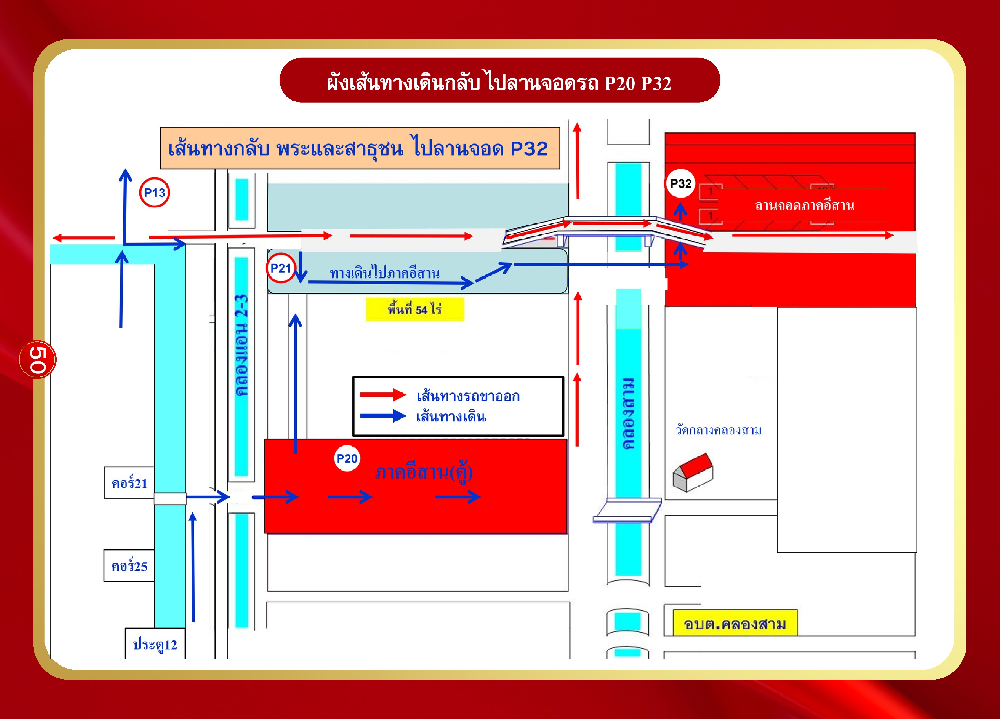
สำหรับผู้ที่เดินไปลานจอด P32 ไม่ไหว มีรถสองแถวบริการที่ P13
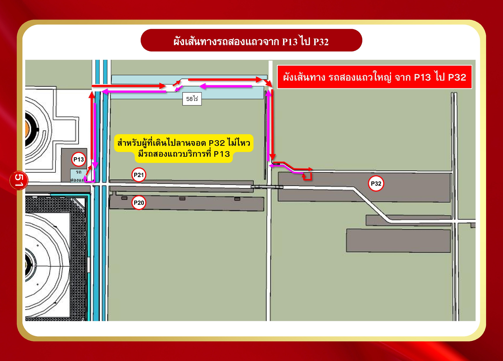
เส้นทางกลับ พระและสาธุชน ไปลานจอด P22, P23 (บุญรักษา) และ P33
ผังนี้สำหรับการเดินกลับไปยังลานจอด:
จุดอ้างอิงภายใน:
เชื่อมกับเส้นทางรอบนอก: คลองแอล 2-3, ถ.เลียบคลองสาม
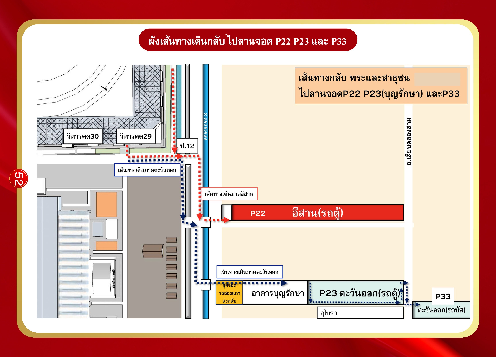
เส้นทางกลับ พระและสาธุชน ไปลานจอด P2, P3
ผังนี้สำหรับพระและสาธุชนที่ต้องการเดินกลับไปยังลานจอด P1, P2, P3, P5 บริเวณ สภาธรรมกายสากล และ วิหารหลวงปู่
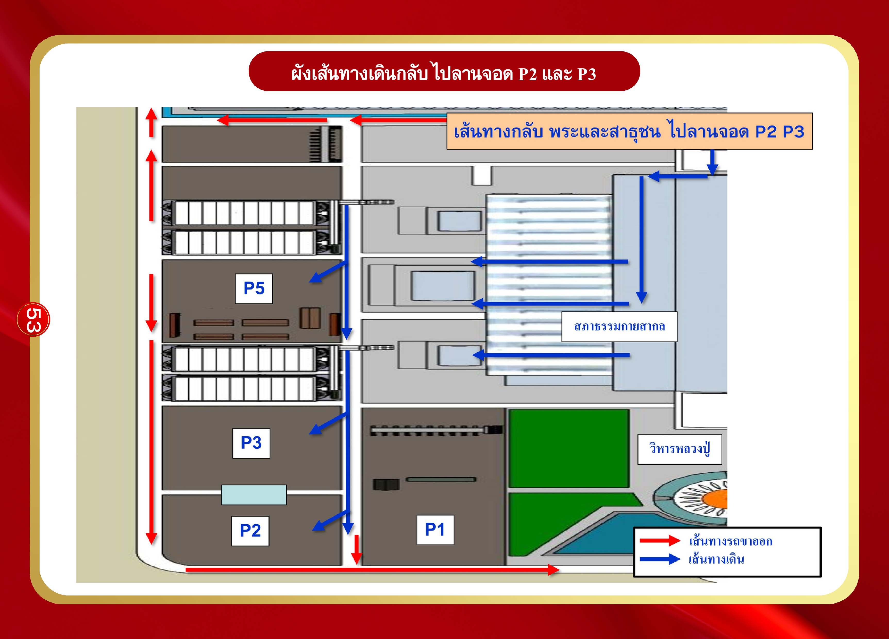
ผังนี้แสดงภาพรวม เส้นทางรถขาออก จากทุกลานจอด และแบ่งประเภทเส้นทางตามประเภทรถ:
ลานจอดที่รวมในผัง: P1, P2, P3, P5, P11, P13, P20, P21, P22, P23, P32, P33 และมีเส้นทางผ่านบริเวณ อบต. คลองสาม

ผังนี้ออกแบบเส้นทางให้ รถส่วนบุคคล ที่จอดอยู่ใน อาคารจอดรถ 3 และ อาคารจอดรถ 4 สามารถออกจากพื้นที่โดย:

| ที่ | โซน | จังหวัด | เบอร์โทร |
|---|---|---|---|
| 1 | กรุงเทพฯ และสมุทรปราการ | กรุงเทพฯ | 083-243-1800 |
| 2 | สมุทรปราการ | 089-669-9103 |
| ที่ | โซน | จังหวัด | เบอร์โทร |
|---|---|---|---|
| 3 | กลาง 1 | อยุธยา | 063-656-2952 |
| 4 | ลพบุรี | 084-393-4765 | |
| 5 | ปทุมธานี | 086-814-2144 | |
| 6 | ชัยนาท | 085-045-4625 | |
| 7 | นครปฐม | 083-540-6653 | |
| 8 | นนทบุรี | 083-540-6402 |
| ที่ | โซน | จังหวัด | เบอร์โทร |
|---|---|---|---|
| 9 | กลาง 2 | สระบุรี | 083-540-5515 |
| 10 | สิงห์บุรี | 083-540-5515 | |
| 11 | อ่างทอง | 081-341-7177 |
| ที่ | โซน | จังหวัด | เบอร์โทร |
|---|---|---|---|
| 12 | ตะวันตก | ราชบุรี | 083-540-6604 |
| 13 | กาญจนบุรี | 082-951-4651 | |
| 14 | ประจวบคีรีขันธ์ | 089-794-0305 | |
| 15 | สุพรรณบุรี | 089-402-4514 | |
| 16 | สมุทรสงคราม | 086-766-8240 | |
| 17 | สมุทรสาคร | 083-540-8077 | |
| 18 | เพชรบุรี | 062-824-6397 |
| ที่ | โซน | จังหวัด | เบอร์โทร |
|---|---|---|---|
| 19 | ตะวันออก | จันทบุรี | 081-575-4373 |
| 20 | ระยอง | 086-322-3496 | |
| 21 | ปราจีนบุรี | 086-893-3594 | |
| 22 | สระแก้ว | 065-296-5629 | |
| 23 | ตราด | 089-770-0821 | |
| 24 | ฉะเชิงเทรา | 086-477-9829 | |
| 25 | นครนายก | 082-741-4255 | |
| 26 | ชลบุรี | 081-536-9399 |
| ที่ | โซน | จังหวัด | เบอร์โทร |
|---|---|---|---|
| 27 | เหนือ 1 | แพร่ | 086-556-6314 |
| 28 | เชียงราย | 089-777-1132 | |
| 29 | แม่ฮ่องสอน | 062-405-7072 | |
| 30 | เชียงใหม่ | 083-540-6048 | |
| 31 | ลำพูน | 086-455-0592 | |
| 32 | ลำปาง | 083-540-4877 | |
| 33 | น่าน | 085-860-5829 | |
| 34 | พะเยา | 083-540-4600 | |
| 35 | นครสวรรค์ | 083-540-4604 |
| ที่ | โซน | จังหวัด | เบอร์โทร |
|---|---|---|---|
| 37 | กำแพงเพชร | 089-746-9083 |
| ที่ | โซน | จังหวัด | เบอร์โทร |
|---|---|---|---|
| 40 | เหนือ 3 | พิจิตร | 081-685-1060 |
| 41 | อุตรดิตถ์ | 089-787-6546 | |
| 42 | เพชรบูรณ์ | 087-204-8275 | |
| 43 | อุทัยธานี | 089-777-7792 |
| ที่ | โซน | จังหวัด | เบอร์โทร |
|---|---|---|---|
| 44 | อีสาน 1 | นครราชสีมา | 098-396-2501 |
| 45 | อุดรธานี | 081-672-2276 | |
| 46 | ชัยภูมิ | 063-310-3270 |
| ที่ | โซน | จังหวัด | เบอร์โทร |
|---|---|---|---|
| 47 | อีสาน 2 | อำนาจเจริญ | 096-669-6982 |
| 48 | บึงกาฬ | 084-349-7999 | |
| 49 | หนองบัวลำภู | 099-298-2528 |
| ที่ | โซน | จังหวัด | เบอร์โทร |
|---|---|---|---|
| 50 | อีสาน 3 | ร้อยเอ็ด | 082-782-6981 |
| 51 | มหาสารคาม | 083-540-6416 | |
| 52 | เลย | 085-184-5734 | |
| 53 | หนองคาย | 088-979-3927 |
| ที่ | โซน | จังหวัด | เบอร์โทร |
|---|---|---|---|
| 54 | อีสาน 4 | ศรีสะเกษ | 093-448-7337 |
| 55 | สุรินทร์ | 085-415-4455 | |
| 56 | ขอนแก่น | 083-666-9960 | |
| 57 | นครพนม | 083-790-4424 | |
| 58 | ยโสธร | 088-647-5888 |
| ที่ | โซน | จังหวัด | เบอร์โทร |
|---|---|---|---|
| 59 | อีสาน 5 | อุบลราชธานี | 088-002-6301 |
| 60 | บุรีรัมย์ | 089-685-0072 | |
| 61 | สกลนคร | 062-529-9950 | |
| 62 | กาฬสินธุ์ | 085-397-8488 | |
| 63 | มุกดาหาร | 092-946-5549 |
| ที่ | โซน | จังหวัด | เบอร์โทร |
|---|---|---|---|
| 64 | ใต้ 1 | สุราษฎร์ธานี | 081-698-3224 |
| 65 | ภูเก็ต | 097-456-5955 | |
| 66 | ชุมพร | 099-559-1914 | |
| 67 | ระนอง | 062-914-2991 | |
| 68 | นครศรีธรรมราช | 096-982-2363 | |
| 69 | กระบี่ | 098-113-7663 | |
| 70 | พังงา | 084-556-2609 |
| ที่ | โซน | จังหวัด | เบอร์โทร |
|---|---|---|---|
| 71 | ใต้ 2 | ตรัง | 081-596-6833 |
| 72 | ปัตตานี | 085-080-9184 | |
| 73 | สงขลา | 093-678-3457 | |
| 74 | ยะลา | 064-907-2323 | |
| 75 | นราธิวาส | 094-428-3315 | |
| 76 | สตูล | 087-394-1431 | |
| 77 | พัทลุง | 087-226-6142 |
ช่วงที่ 1 เวลา 19.30 น. เป็นต้นไป:
ช่วงที่ 2 เวลา 21.30 น. เป็นต้นไป:
คำเตือน: รถบัส-รถตู้ จอดในลานจอดที่กำหนดเท่านั้น "ห้ามย้ายรถออกมารับสาธุชนนอกลานจอด"